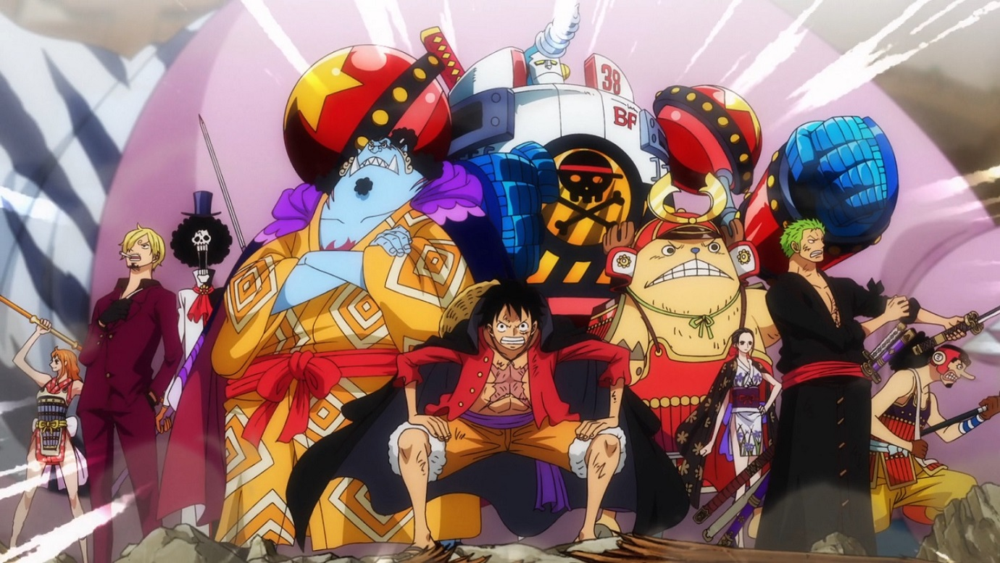

O que é One Piece?
One Piece é o nome que o mundo deu a todo o tesouro ganho pelo Rei dos Piratas Gol D. Roger. Pelo menos uma parte dele é um tesouro que pertenceu a Joy Boy durante o Século Perdido. Diz-se que o tesouro tem um valor inimaginável e atualmente está localizado na ilha final da Grand Line, Laugh Tale.
O One Piece é o objetivo principal de Monkey D. Luffy e sua tripulação, bem como de vários outros piratas, que buscam reivindicar o tesouro para se tornar o próximo Rei dos Piratas, seguindo as últimas palavras de Roger em sua execução.
O Grande Tesouro
Em algum momento durante o Século Perdido, um homem chamado Joy Boy esteve em uma ilha localizada no fim da Grand Line. Ali, ele deixou um tesouro de valor inimaginável. As histórias desse tesouro na ilha final despertaram o interesse de Gol D. Roger, que interpretou a proibição da exploração da ilha pelo Governo Mundial como prova de que isso era real.

Somente os membros dos Piratas do Roger que viajaram para a ilha sabem exatamente o que é o grande tesouro. Ao chegarem lá e vê-lo, os Piratas do Roger simplesmente começaram a rir. Roger o descreveu como um "conto cheio de risadas", o que lhe deu a ideia de nomear a ilha final como "Laugh Tale" ("conto para rir" em tradução livre). Algum tempo depois da descoberta da tripulação, o mundo em geral começaria a se referir a esse tesouro como "One Piece".
Antes de Roger ser executado, ele anunciou ao mundo que esse grande tesouro poderia ser reivindicado por qualquer um que conseguisse alcançá-lo, iniciando assim a Grande Era dos Piratas.
O mais próximo que os Piratas do Chapéu de Palha já chegaram de descobrir a natureza do One Piece foi durante o Arco Arquipélago de Sabaody, quando Usopp tentou perguntar a Silvers Rayleigh sobre isso. No entanto, Luffy o deteve com o argumento de que saber a respeito do tesouro por outra pessoa anularia o propósito de suas aventuras e que se tornar o Rei dos Piratas teria pouco mérito se ele já soubesse alguma coisa sobre o One Piece.
Após décadas de especulações e dúvidas, a existência do tesouro foi confirmada por Barba Branca em suas últimas palavras. Ele mencionou que "uma grande batalha envolverá o mundo inteiro" e "o mundo virará de cabeça para baixo" quando o One Piece for encontrado.
Durante o ArcoPaís de Wano, Big Mom teve um monólogo interno expressando a ideia de que "uma parte" do One Piece pode estar localizado no País de Wano, em vez de Laugh Tale. Isso ainda precisa ser mais aprofundado.